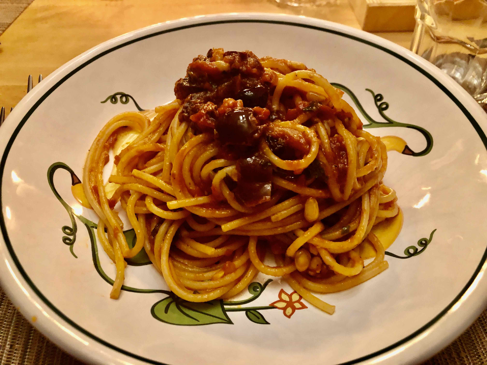

Sicilian Anchovy Pasta

Description:
How do you make simple boiled pasta taste amazing? Here's your answer. Once you try this recipe, you'll be hooked.
Ingredients:
- 1 pound spaghetti
- 4 tablespoons olive oil
- 1 (2 ounce) can anchovy fillets, chopped
- 3 cloves garlic, crushed
- 2/3 cup fine bread crumbs, or to taste
- 1 cup chopped fresh parsley
- ground black pepper to taste
- 4 tablespoons freshly grated Parmesan cheese
Instructions:
- Bring a large pot of lightly salted water to a boil. Add pasta and cook for 8 to 10 minutes or until al dente; drain.
- Meanwhile, heat olive oil in a medium skillet over medium heat. Add anchovies and garlic; cook and stir continuously until anchovies sizzle and garlic is fragrant, about 2 minutes.
- Stir in bread crumbs and turn off heat. Stir in parsley and pepper.
- Toss anchovy sauce with hot pasta and sprinkle with Parmesan cheese; serve.
Home
Source